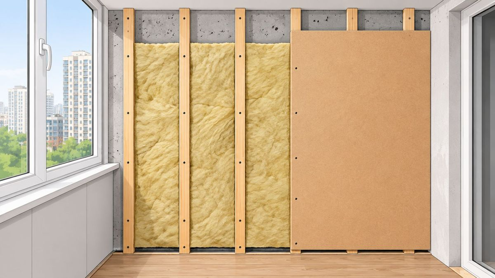

на лоджии 6 м² стены обшивают панелями ПВХ, МДФ или вагонкой по обрешётке 20–30 мм. Обязательны зазор 5–10 мм у пола, вентзазор 20 мм и пароизоляция — без них панели ведёт через 1–2 сезона. Материалы — 12 000–30 000 руб., с работой — 25 000–60 000 руб. Плесень появляется не от материала, а от сырого основания и отсутствия вентиляции.
Материалы: ПВХ, МДФ, вагонка, гипсокартон
| Материал | Цена за м² | Срок службы | Где не ставить |
|---|---|---|---|
| Панели ПВХ | 350–800 руб. | 8–12 лет | под прямым солнцем, у открытых окон |
| МДФ-панели | 700–1 500 руб. | 10–15 лет | на холодной неотапливаемой лоджии |
| Вагонка (сосна, липа) | 450–1 200 руб. | 10–15 лет | при влажности выше 70 % |
| Гипсокартон влагостойкий | 300–600 руб. | 15–20 лет | без утепления и отопления |
ПВХ не боится влаги и моется, но выгорает на солнце и расширяется при нагреве. МДФ теплее на ощупь, но боится сырости: на неутеплённой лоджии кромки набухают за один сезон. Вагонка экологична, но требует антисептика и лака.
Обрешётка и зазоры

| Элемент | Размер | Шаг / зазор | Зачем |
|---|---|---|---|
| Брус обрешётки | 20×40 или 30×50 мм | 400–600 мм | крепление и вентзазор |
| Зазор у пола | — | 5–10 мм | компенсация температурных подвижек |
| Зазор у потолка | — | 5–10 мм | то же |
| Вентзазор за панелью | — | 20–30 мм | вывод влаги |
| Крепёж | саморез 35–45 мм | каждые 300–400 мм | панель не «хлопает» |
Брус берут сухой, влажностью 12–15 %, и обрабатывают антисептиком. Сырой брус 40×40 мм — главная причина того, что обшивку «ведёт»: при высыхании его крутит и панели расходятся по швам.
Пароизоляция и вентиляция
На утеплённой лоджии пароизоляция ставится между утеплителем и обрешёткой, швы проклеиваются. На холодной лоджии пароизоляция не нужна, но нужен вентзазор и приток воздуха: иначе влага от сушки белья оседает на холодных панелях.
- Приток — 2–3 клапана по 5–10 м³/ч или щелевое проветривание.
- Вытяжка — естественная через дверь в комнату или принудительная на 30 м³/ч.
- Влажность — не выше 60 %: при 70–80 % плесень появляется на любом материале.
Углы, откосы, примыкания
| Узел | Решение | Цена |
|---|---|---|
| Внутренний угол | уголок ПВХ или деревянный штапик | 150–400 руб./м.п. |
| Откос окна | панель 10 мм или сэндвич-панель | 600–1 500 руб./м.п. |
| Примыкание к полу | плинтус с каналом или герметик | 200–500 руб./м.п. |
| Стык с потолком | потолочный плинтус | 150–350 руб./м.п. |
Откосы утепляют XPS 20–30 мм: без этого рама промерзает по контуру и на панелях вокруг окна появляется конденсат.
Расчёт на лоджию 6 м
| Позиция | Количество | Стоимость |
|---|---|---|
| Панели ПВХ | 14–16 м² с запасом 10 % | 5 000–12 000 руб. |
| Брус 20×40 мм | 25–30 м.п. | 2 000–4 500 руб. |
| Крепёж, антисептик | — | 1 500–3 000 руб. |
| Уголки, плинтусы | 18–22 м.п. | 3 000–7 000 руб. |
| Работа | 14–16 м² | 10 000–25 000 руб. |
Итого 21 500–51 500 руб. Своими руками — 11 500–26 500 руб. за материалы. МДФ дороже на 40–60 %, но выглядит как мебель и не «звенит» при касании.
Что делать со старой обшивкой
| Старое покрытие | Действие | Причина |
|---|---|---|
| Пластиковые панели без плесени | можно оставить, смонтировать новую обрешётку поверх | экономия 3 000–6 000 руб. на демонтаже |
| Панели с чёрными пятнами | снять полностью, обработать стену | споры остаются за обшивкой |
| МДФ с набухшими кромками | снять, проверить утеплитель | влажный утеплитель теряет свойства |
| Вагонка с синевой | снять, заменить поражённые участки | грибок разрушает древесину |
Перед новой обшивкой стену обрабатывают антисептиком-фунгицидом в 2 слоя и сушат 3–5 дней. Если плесень ушла в штукатурку на глубину больше 5 мм, слой сбивают: поверхностная обработка не помогает.
Порядок работ
- Проверить основание: стены сухие, без плесени, перепад до 10 мм на 2 м.
- Обработать антисептиком стены и брус, дать высохнуть.
- Смонтировать обрешётку по уровню с шагом 400–600 мм.
- Уложить пароизоляцию (на утеплённой лоджии) с проклейкой швов.
- Установить панели снизу вверх, оставив зазоры 5–10 мм у пола и потолка.
- Закрыть углы и примыкания профилями, проверить вентиляцию.
Ошибки и их цена
| Ошибка | Последствие | Исправление |
|---|---|---|
| Сырой брус 40×40 мм | панели ведёт, швы расходятся | демонтаж 8 000–18 000 руб. |
| Нет зазора у пола | панели упираются и выгибаются | переделка нижнего ряда |
| МДФ на холодной лоджии | кромки набухают за сезон | замена на ПВХ 10 000–20 000 руб. |
| Нет вентиляции | плесень в углах и за панелями | обработка и клапаны 5 000–12 000 руб. |
Смета 2026
| Вариант | Материал на 15 м² | Работа | Итого |
|---|---|---|---|
| Панели ПВХ | 11 500–26 500 руб. | 10 000–25 000 руб. | 21 500–51 500 руб. |
| МДФ-панели | 18 000–38 000 руб. | 12 000–28 000 руб. | 30 000–66 000 руб. |
| Вагонка с лаком | 14 000–32 000 руб. | 14 000–30 000 руб. | 28 000–62 000 руб. |
Переделка из-за плесени: демонтаж, обработка антисептиком, просушка и новая обшивка — 25 000–50 000 руб. Плюс испорченные вещи, которые хранились на лоджии.
Чек-лист перед обшивкой
- Стены сухие, плесень обработана и удалена.
- Брус сухой, обработан антисептиком.
- Обрешётка выставлена по уровню, шаг 400–600 мм.
- Зазоры 5–10 мм у пола и потолка оставлены.
- Приток воздуха и вытяжка обеспечены.
Частые вопросы
Чем лучше обшить лоджию: ПВХ или МДФ?
На холодной лоджии — ПВХ: не боится влаги. На утеплённой и отапливаемой — МДФ: теплее и выглядит дороже.
Нужна ли обрешётка, если стены ровные?
Да, для вентзазора 20 мм. Без него влага остаётся между панелью и стеной, и через сезон появляется плесень.
Можно ли клеить панели прямо на стену?
Только на идеально ровную и сухую стену и только в отапливаемом помещении. На лоджии клей не даёт вентиляции и не компенсирует подвижки.
Какой зазор оставлять у пола?
5–10 мм. Панель не должна упираться в пол: при нагреве она расширяется и выгибается «волной».
Почему на лоджии появляется плесень?
Из-за влаги без вентиляции: сушка белья, растения, негерметичные примыкания. Материал обшивки вторичен — сначала устраняют источник влаги.
Сколько стоит обшить лоджию 6 м²?
Панелями ПВХ — 21 500–51 500 руб. с работой, своими руками — 11 500–26 500 руб. МДФ — 30 000–66 000 руб.
Можно ли обшить лоджию гипсокартоном?
Можно влагостойким (ГКЛВ) на утеплённой лоджии с отоплением. На холодной лоджии гипсокартон набирает влагу и требует шпаклёвки и покраски — это дороже панелей на 20–30 %.
Сколько сохнет антисептик перед обшивкой?
3–5 дней при +20 °C и открытых окнах. Наносить обрешётку на влажную стену нельзя: влага останется под панелями.